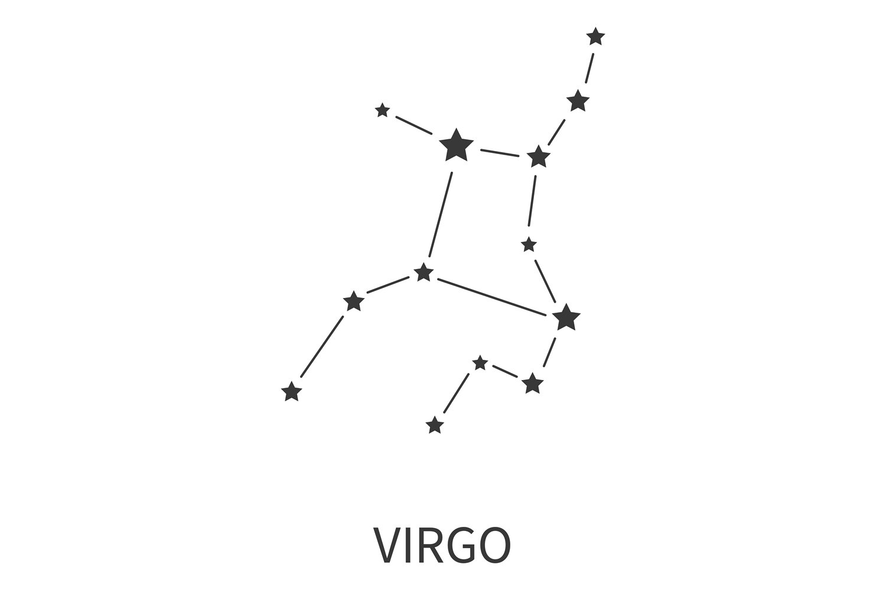

Virgo (Constellation)
► Virgo is the largest constellation of the Zodiac. ◄
► Virgo lies between the constellations Leo and Libra, at 13 hours right ascension and 2 degrees South declination. It's visible in the Northern Hemisphere during spring and summer, and to Southern observers during autumn and winter. ◄
► Depending on how many stars you include within the constellation, there are either 9 or 15 main stars. A few of them are double stars that are very close to each other. In the general area of Virgo, there are some 160 stars within the visible brightness of the human eye. ◄
